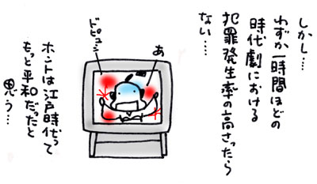

| 外に出るよりも、家のなかにいるほうが好きだ。仮面社交家である私は、ちょくちょくほっつき歩いては人と会い、きゃっきゃっきゃっきゃとはしゃいでるものの、ココロの奥底に咲いている花は、「はやく家に帰りたいよ…」といつだってしおれている。
家のなかでも、一番好きな場所は、ふとんのなかだ。
ふとんをかぶり、薄暗い空間で、あれこれ考え事しているのが、心底たのしい。
そんな私にとって、一番身近にあるうつしみの江戸は、「時代劇専門チャンネル」だ。
二四時間三百六十五日、えんえんと時代劇だけを流している。
もっぱら、スカパー！ で楽しんでいるが、ケーブルテレビなどでも視聴可能なはずだ。
里見浩太朗主演『大江戸捜査網』、松平健主演『暴れん坊将軍IV』、唐沢寿明・松嶋菜々子主演『利家とまつ〜加賀百万石物語〜』、風間杜夫主演『銭形平次』など、人気時代劇を一気に見ることができる。
時代劇に主演をはるのは、その俳優がその時代の旬であるという証なのか、いまやいぶし銀である山崎努は、三二年前に主演した『無宿侍』では、なまめかしい美青年であり、ホントは江口洋介と似ていたんだ、ということを私はこのチャンネルで認識した。
このチャンネルを初めて知ったとき、ボーゼンとした。
いったいこのせちがらい世の中に、二十四時間、時代劇を見るニーズがいったいどこにあるのだろうか、と。
年末が近づくと、忠臣蔵が一挙放映されるが、それはなんとなくニーズがわかる。歴史好きのお父さんの骨休み、あるいは毎年、歳時記的に楽しみにしている老人たちの姿が、容易に想像できる。
時代劇専用チャンネル、いったい誰が見るの？
…と、とまどいを覚えつつ、ちょんまげマーク（時代劇専門チャンネルのマーク）にチャンネルをあわせたのが一年前。
そのとき、まさに暴れん坊将軍が、白馬に乗ってぱっかぱっかと私にむかって走ってきたところだった。
そのまま見てみると、廻船問屋の裏切りに立腹、親子の情に号泣、立ち回りにコーフン、暴れん坊将軍に拍手喝采を送った。
それ以来、ふとんのなかから這い出しては、ちょくちょく時代劇専門チャンネルを見るようになった。
誰が見るのだ？ と思いつつ見た結果、自分が虜になった。
月９のドラマを見るなら、時代劇専用チャンネル…、というふうに、私にとっては、連続ドラマといえば時代劇、となってしまった。
なぜだろう…。
そんなことを考えながら、真行寺君枝主演「烙印の女たち」を見た。今月いちばんのオススメである。
牢に入っている女囚たちが、大火事の延焼によって、三日間の一時帰宅を許される。その三日間のあいだに、「引き回しのうえはりつけを申しつけられたお千代」という美しくも悲しき運命に弄ばれた女囚が、罪をなすりつけた悪代官どもに復讐する、というあらすじだ。しかし時代劇の場合、あらすじはさほど重要ではないような気がする。
千代が処刑される前夜、同じ牢の女囚たちが、ちぎった和紙を口のなかに放り込み、舌でねぶってまるい珠にする。それを糸でつないで長い長いお数珠にして、千代の首にかけてやる。
ココロと手間をかけて作ったお数珠に、私は号泣した。唾液が糊代わりなのだ、すごいよぉ。
そしてまた、牢では三白眼ですごんでいた牢名主が、江戸の町に放たれるやいなや、母親の顔になり、家にむかって一目散に走る。長屋につくと、たくさんの子供たちと病弱な夫が待っていた。ひしっと家族全員が抱き合って再会を喜ぶ。ここからがすごい。たった三日間の帰宅なのに、いっときものんびりせずに、家事にいそしみ、夜はからだをはって夜鷹になって荒稼ぎ。家族におまんまを腹いっぱい食べさせて、あたらしいおべべを買い与えるのだ。満面の笑顔で、束の間のシャバを生き抜く。いじらしい、とまた号泣。
という具合に、時代劇は筋と関係なく、シーンごとに瞬間的感動をもたらすことが多い。
どの時代劇にも、貧困、涙、ロマンス、裏切りと暴力、適度な血しぶき、が必ずある。
江戸の太平を描きながら、様々な設定はあるものの、結局のところ、訴えかけてくることは、すべて「人情」の一言に尽きる。
人情に触れると、ほっとする。時代劇は、裏切ることなく、安らぎを私に与えてくれる。
ふとんのなかで間違いなく得られる、ぬくぬくしたあの感じと、通じるものがある。

|